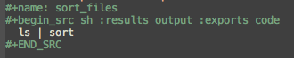
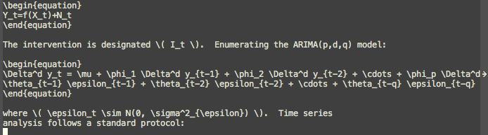
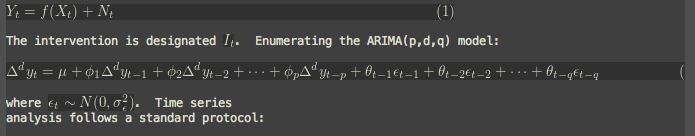
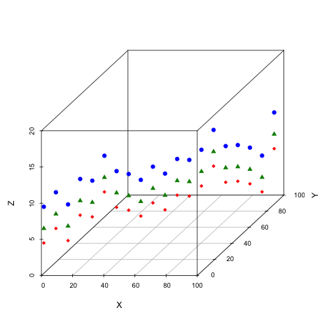
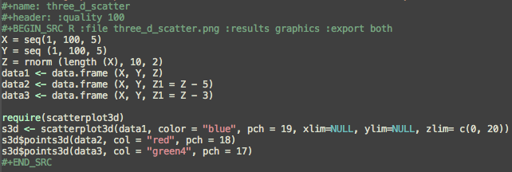

Org-mode as a tool for reproducible research
Evan Misshula
emisshula@jjay.cuny.edu
Reproducible research
Reproducible research is the idea that scientific claims are published:
- with their data
- software code used to analyze them
Clarebout's principal
An article about computational result is advertising, not scholarship. The actual scholarship is the full software environment, code and data, that produced the result.
Claerbout and Karrenbach, Proceedings of the 62nd Annual International Meeting of the Society of Exploration Geophysics. 1992
Tie code to figure
When we publish articles containing figures which were generated by computer, we also publish the complete software environment which generates the figures
Buckheit & Donoho, Wavelab and Reproducible Research, 1995.
Overview
- scope of the problem
- definitions
- current practice
- tools
- changes to improve reproducibility and differentiate research
Is #Reproducibility a problem?
Cancer research
- In 2012, an Amgen team tried to reproduce important resutls
- pre-clinical targets for cancer
- 47 out of 53 medical research papers
- were irreproducible
(http://www.nature.com/nature/journal/v483/n7391/full/483531a.html)
Psychology
- Researchers explained in a 2006 study that, of 249 data sets from American Psychology Association (APA) empirical articles, 73% of contacted authors did not respond with their data over a 6-month period.
- http://www.ncbi.nlm.nih.gov/pubmed/17032082
Psychology II

- Ioannidis, Why science is not necessarily self-correcting 2012.
Economics
Reinhart & Rogoff Growth in a time of debt, NBER, 2009
- High debt-to-gdp and low gdp growth are associated
- Made their calculations in Excel
- Substantial popular impact on autsterity politics
- Grad student finds an error in the coding
- Herndon, Ash and Pollin publish a rebuttal
Advice from a statistician

Computer Science
Christian Collberg (http://reproducibility.cs.arizona.edu/v1/tr.pdf) looked at the papers in eight conferences and five ACM journals. They were able to reproduce 102 out 613 papers 24.9%
History of reproducible research
Mathematics
- First proofs Greeks (ca. 400 B.C.E.)
- Pythagoras (569–500 B.C.E.) proofs
- Euclid of Alexandria (325 B.C.E.–265 B.C.E.) axioms and definitions
- Eudoxus (408 B.C.E–355 B.C.E.) theorems
- William of Occam (1288 C.E.–1348 C.E.) fewest steps
Advances in mathematics and proof
- Jean Baptiste Joseph Fourier (1768–1830)
- expansion of an arbitrary function into a trigonometric series
- Evariste Galois (1812–1832) and Augustin Louis-Cauchy (1789–1857)
- abstract algebra by inventing group theory.
- Bernhard Riemann (1826–1866)
- differential geometry, complex variable theory
- Augustin-Louis Cauchy
- partial differential equations
- Carl Jacobi (1804–1851), Ernst Kummer (1810–1893), Niels Henrick Abel (1802–1829)
- number theory
- Joseph Louis Lagrange (1736–1813), Cauchy
- calculus of variations, classical mechanics, the implicit function theorem
- Karl Weierstrass (1815–1897)
- real and complex analysis with numerous examples and proofs
Anti-replicatants
- Gauss
- inscrutible style
- Bourbaki
- Rejection of intuition of any kind
Gauss
No self-respecting architect leaves the scaffolding in place after completing the building.
attributed to Carl Friedrich Gauss (1777 C.E. - 1855 C.E.) in defense of his inscrutible style
Twentieth Century Contributions
A proof is any completely convincing argument.
Everret Bishop, inventor of Constructive Analysis E. Bishop, Foundations of Constructive Analysis, McGraw-Hill, New York, 1967.
Experiments
- Robert Grosseteste (c. 1175 C.E. – 1253 C.E.)
- reasoned from universal to particular prediction
- Posterior Analytics
- Roger Bacon, (c. 1214 C.E. – 1294 C.E.)
- observation, hypothesis, experimentation, and the need for independent verification.
- Galileo (1564 C.E. - 1642 C.E.),manufactured multiple copies of his telescopes
- Pasteur added Materials and Methods section to articles
Modern leaders of reproducibility I
- Knuth (1984) "literate programming"
- Stallman (1984) FREE software
- Lessig, Abelson and Eldred (2001) Creative Commons
- Torvalds (2005) git
Modern leaders of reproducibility II
- Iodonnis (2005)
- most published research is False
- 25 million papers between 1996 - 2011
- 85% of research assets are wasted
http://www.plosmedicine.org/article/info:doi/10.1371/journal.pmed.0020124
- Stodden (2007) The Legal Framework for Reproducible Scientific Research: Licensing and Copyright
Tools for computational reproduciblity
- (Stodden, April 2014)
- (Marwick, March 2013)
Dissememination platforms
- ResearchCompendia.org (already published articles)
- MLOSS.org (machine learning)
- thedatahub.org (data sets)
- Open Science Framework (planning to publishing)
- Madagascar (multi-dimensional analysis)
- nanoHUB.org (nano-techonology simulation platform)
- runmycode.org (code and data)
Research Environments
- VisTrails (python libraries and \LaTex)
- Kepler-project (R and C wrappers though built in Java)
- Galaxy (biomedical data analysis)
- GenePattern (gene analysis framework)
- Sumatra (electronic notebook for simulations)
- Taverna (workflow management and R)
- CDE (portable linux apps with data and dependencies)
Embedded Publishing
- Jupyter (2014, multi-language interactive environment)
- IPython (Perez and Granger, 2007, python interactive environment)
- Verifiable Computational Research (Stanford University, matlab plugin)
- Collage (Elsevier)
- share (University of Eindhoven, linux containers)
- Sweave (Leisch 2002, R)
- knitr (Xie, 2013, R)
- Org-mode (Schulte, 2012, multi-language)
Org-mode solves three problems
(Kitchin, Emacs, Org-mode + python reproducible research, 2013) http://www.youtube.com/watch?v=1-dUkyn_fZA
- documents computation workflow
- integrates text, math and code
- produce or modifies a figure
Org mode and Emacs
- Emacs is written in a full programming language
- understands LaTeX, markdown, language modes (R, Python, C, C++ and Java etc.)
- can interact with OS
- execute code
- read the standard output
- read the standard error (and insert into the buffer)
Org-mode
- note taking
- TODO lists
- differentiates between text, code and data
- code executes in the buffer
- enables links to files, urls
- #+INCLUDE allows files to be broken into reusable pieces
- exports available LaTeX, html, reveal.js etc.
Initialize languages (main document)
** org file [[file:initialize.org]]
Initialize languages
;; first it is necessary to ensure that Org-mode loads support for the
;; languages used by code blocks in this article
(org-babel-do-load-languages
'org-babel-load-languages
'(
(ditaa . t)
(dot . t)
(emacs-lisp . t)
(haskell . t)
(org . t)
(perl . t)
(python . t)
(R . t)
(ruby . t)
(sh . t)
(sqlite . t)))
;; then we'll remove the need to confirm evaluation of each code
;; block, NOTE: if you are concerned about execution of malicious code
;; through code blocks, then comment out the following line
(setq org-confirm-babel-evaluate nil)
;; finally we'll customize the default behavior of Org-mode code blocks
;; so that they can be used to display examples of Org-mode syntax
(setf org-babel-default-header-args:org '((:exports . "code")))
shell script tricks
cd ~/Documents/rr ls | sort
shell script (how it exports, code only)
cd ~/Documents/rr ls | sort
shell script (how it looks in Emacs)
python script (code and results)
import os
files = os.listdir('.')
files.sort()
for f in files: print f
.Rhistory 3dscatter.R 3dscatter.R~ images initialize.org initialize.org~ mybib.bib mybib.bib~ reveal.js rr.org rr.org~ three_d_scatter.png threed_scatter.png
text and math (raw latex)
text and compiled LaTex
create a graph (exported code)
X = seq(1, 100, 5) Y = seq (1, 100, 5) Z = rnorm (length (X), 10, 2) data1 <- data.frame (X, Y, Z) data2 <- data.frame (X, Y, Z1 = Z - 5) data3 <- data.frame (X, Y, Z1 = Z - 3) require(scatterplot3d) s3d <- scatterplot3d(data1, color = "blue", pch = 19, xlim=NULL, ylim=NULL, zlim= c(0, 20)) s3d$points3d(data2, col = "red", pch = 18) s3d$points3d(data3, col = "green4", pch = 17)
graph (exported result)
graph function (how it looks in Emacs)
how do we make it better
Don't submit or cite journals that don't make code and data available.
Don't review unless code and data are provided.
Promote FOSS software at your institution.
Don't work for an advisor that won't learn source control.
- Evan Misshula
- @emisshula
- http://evanmisshula.github.io/